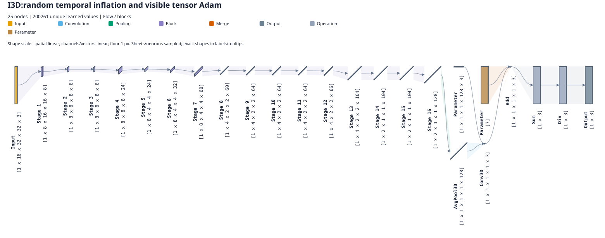
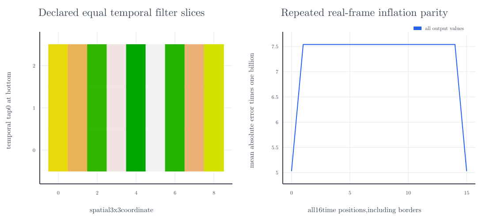
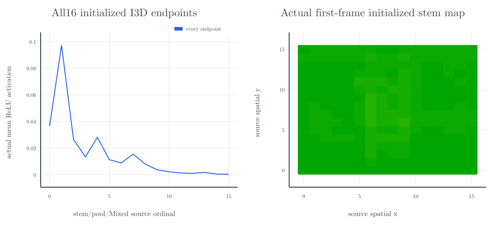
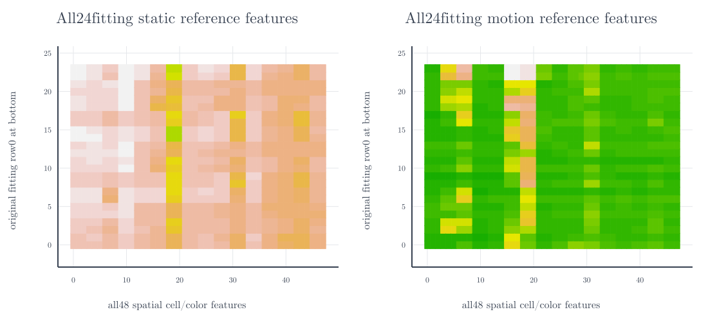
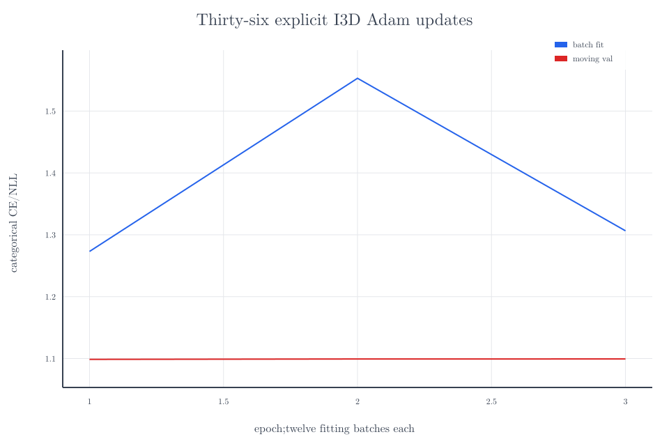
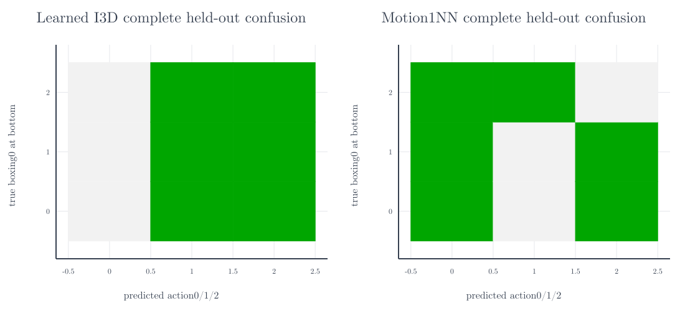
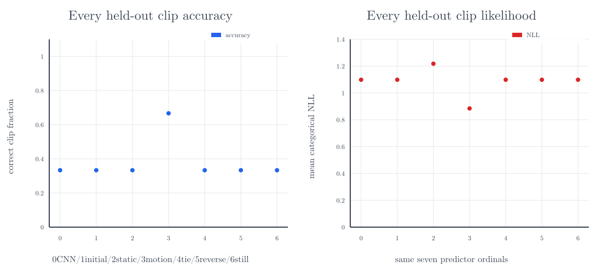

I3D:random temporal inflation and visible tensor Adam
Abstract
Original KTH clips feed all57inflated3Dunits and nine Mixed modules. Visible tensor Adam,population BN state,complete data previews and every held-out error expose what the short RGB-only fit actually learns.
Source example: examples/cpp/source/nn/1_convolutional_neural_networks/1.10_3d_and_video_convolutions/i3d.cpp.
The method
Inflate random spatial filters equally over time,preserve the complete RGB I3D graph and source offset-only population BN,then show every optimizer and moving-state update. Select paired checkpoints on validation and restore RGB-only inference before complete held-out and temporal-control comparisons.
The concept diagram below is drawn by dm::graphics::Diagram. Its editable C++
source is the complete block below; regeneration uses the same datamunge toolchain
as the numerical examples. Exports consume the saved local SVG.
#include <dm/dm.hpp>
int main() {
std::filesystem::create_directories("build");
dm::graphics::Diagram diagram;
diagram.node("n0", {0.0, 0}, "Original annotated\n video frames");
diagram.node("n1", {5.2, 0}, "57inflated units\n and population BN");
diagram.node("n2", {10.4, 0}, "Visible Adam\n and paired restoration");
diagram.edge("n0", "n1").edge("n1", "n2");
diagram.save_svg("build/i3d_concept.svg");
}Executed tensor architecture
This figure executes the inference configuration shown in the code, using a zero-valued shape probe without fitting or loading a checkpoint. Named stage boundaries group whole subgraphs where available; other nodes retain functional-layer detail. Exact batch-inclusive shapes and reachable parameter totals come from the trace. Shared linear scales map spatial dimensions and channel counts to blocks; the one-pixel visibility floor is disclosed in the legend. Labels use compact monospace text, rotate counterclockwise and sit beside their own glyphs. Arrows flow left to right; wide diagrams scroll at native size on the website.
#include <dm/dm.hpp>
int main() {
namespace n = dm::nn;
namespace m = n::models;
n::set_num_threads(2);
std::filesystem::create_directories("build");
const m::I3dConfig c{8, 3, 16, 32};
n::ParameterStore p(677), state(679);
n::Generator dropout(673);
n::Module architecture_model(
[&](const n::Tensor& image) {
const auto out = m::I3d(p, state, image, c);
auto previous = image;
for (std::size_t i = 0; i < out.stages.size(); ++i) {
n::model_stage("Stage " + std::to_string(i + 1), previous, out.stages[i]);
previous = out.stages[i];
}
return out.logits;
},
"I3D:random temporal inflation and visible tensor Adam");
n::ModelPlotOptions options;
options.style = n::ModelPlotStyle::Flow;
options.detail = n::ModelPlotDetail::Blocks;
options.labels = {.type = n::ModelPlotLabel::NameAndShape, .size = 12, .wrap = 24};
options.spacing = {.layer = 24, .lane = 12, .label = 8, .margin = 20};
options.sizing.spatial_size = 96;
options.sizing.channel_size = 42;
options.sizing.minimum_extent = 1;
options.opacity = .8;
const auto diagram = architecture_model.plot(n::zeros({1, 16, 32, 32, 3}), options);
diagram.save_svg("build/i3d_architecture.svg");
std::print(
"{} displayed nodes; {} reachable learned values.\n",
diagram.nodes().size(),
diagram.parameter_count());
}25 displayed nodes; 200261 reachable learned values.

Genuine original video and every held-out frame
Use the same original KTH24fit/6validation/6test clips as C3D and factorized video:boxing0/handclapping1/handwaving2,scenario1,people1..4/5/6,first two annotated segments per source video. Sixteen unique actual frames span each original segment. FFmpeg only decodes;tensor Float32 legacy bilinear32px resize and/255 produce model inputs. The original AVI/annotation mirror is pinned to7076149bdbeff8d70003a68d6291fd080db44683 because the KTH server is unavailable. All source hashes,frame identities and segment/person boundaries are retained.
#include <dm/dm.hpp>
int main() {
const std::filesystem::path cache = dm::datasets::data_home();
dm::datasets::prepare_example_data("video", (cache / "action_video").string());
}Show every frame of all six held-out clips and their actual identities. This custom six-person,three-action sample is not a Kinetics/KTH benchmark. Selected frames need not be adjacent in the original recording.
#include <dm/dm.hpp>
int main() {
namespace n = dm::nn;
namespace m = n::models;
n::set_num_threads(2);
std::filesystem::path cache;
if (const auto *p = std::getenv("DATAMUNGE_DATA_DIR"))
cache = p;
else if (const auto *p = std::getenv("XDG_CACHE_HOME"))
cache = std::filesystem::path(p) / "datamunge/datasets";
else
cache = std::filesystem::path(std::getenv("HOME")) / ".cache/datamunge/datasets";
std::filesystem::path root = cache / "action_video";
if (const auto *p = std::getenv("DATAMUNGE_VIDEO_DIR"))
root = p;
else
dm::datasets::prepare_example_data("video", root.string());
const auto pools = m::LoadVideo(root);
const auto &fit = pools[0];
const auto &validation = pools[1];
const auto &test = pools[2];
std::print("| gallery row | action0boxing/1clapping/2waving | person | original video | "
"original segment |\n|---:|---:|---:|---:|---:|\n");
const auto labels = test.labels.to_vector<int>(), people = test.person.to_vector<int>(),
videos = test.video.to_vector<int>(), segments = test.segment.to_vector<int>();
for (int row = 0; row < test.size(); ++row)
std::print("| {} | {} | {} | {} | {} |\n", row, labels[row], people[row], videos[row],
segments[row]);
const auto delta =
n::mean(n::abs(n::slice_axis(fit.rgb, 1, 1, 16) - n::slice_axis(fit.rgb, 1, 0, 15))
.to(n::DType::Float64),
{2, 3, 4});
auto plot = dm::graphics::RPlot::create();
plot.lines(n::arange(1, 16).to_vector<double>(), n::mean(delta, {0}).to_vector<double>(),
"all fitting clips", {37, 99, 235})
.title("Actual mean selected-frame change")
.x_label("successive selected-frame pair")
.y_label("mean absolute RGB difference");
plot.save_svg("build/i3d_data_motion.svg");
std::filesystem::create_directories("figures");
std::filesystem::copy_file("build/i3d_data_motion.svg", "figures/i3d_data_motion.svg",
std::filesystem::copy_options::overwrite_existing);
n::save_image_grid(test.rgb.reshape({96, 32, 32, 3}), "build/i3d_data.png", 16, 0, 1, 2, 0,
2);
}| gallery row | action0boxing/1clapping/2waving | person | original video | original segment |
|---|---|---|---|---|
| 0 | 0 | 6 | 5 | 0 |
| 1 | 0 | 6 | 5 | 1 |
| 2 | 1 | 6 | 11 | 0 |
| 3 | 1 | 6 | 11 | 1 |
| 4 | 2 | 6 | 17 | 0 |
| 5 | 2 | 6 | 17 | 1 |


Temporal inflation and repeated-image borders
Inflate a Float32 HWIO spatial kernel intoTidentical slices,W3D[t]=W2D/T. All57normalized units initialize from RANDOM spatial Glorot filters;there is no ImageNet/Kinetics weight loading. Repeated-image interior response matches the spatial convolution. Temporal zero-padding edges receive fewer taps; for a three-tap filter the first/last response is2/3of the interior response. The original native fixture verifies every196source-kernel/input derivative.
Below repeat the first real fitting frame as an explicitly declared control, apply a three-tap inflated kernel,and compare all outputs with a2Dconvolution scaled by the actual temporal tap fraction. Repeated images are not training data.
#include <dm/dm.hpp>
int main() {
namespace n = dm::nn;
namespace m = n::models;
n::set_num_threads(2);
std::filesystem::path cache;
if (const auto *p = std::getenv("DATAMUNGE_DATA_DIR"))
cache = p;
else if (const auto *p = std::getenv("XDG_CACHE_HOME"))
cache = std::filesystem::path(p) / "datamunge/datasets";
else
cache = std::filesystem::path(std::getenv("HOME")) / ".cache/datamunge/datasets";
std::filesystem::path root = cache / "action_video";
if (const auto *p = std::getenv("DATAMUNGE_VIDEO_DIR"))
root = p;
else
dm::datasets::prepare_example_data("video", root.string());
const auto pools = m::LoadVideo(root);
const auto &fit = pools[0];
const auto &validation = pools[1];
const auto &test = pools[2];
const auto frame = n::slice_axis(n::select(fit.rgb, 1, 0), 0, 0, 1);
const auto spatial = (n::sin(n::arange(0, 108) * .23) * .07).reshape({3, 3, 3, 4});
const auto inflated = m::InflateI3d(spatial, 3);
const auto video = n::tile(n::expand_dims(frame, 1), {1, 16, 1, 1, 1});
const auto y = n::conv3d(video, inflated, n::conv3d_options(1, n::Padding::Same));
const auto two_d = n::conv2d(frame, spatial, n::Conv2DOptions{.padding = n::Padding::Same});
const auto fraction =
n::conv1d(n::ones({1, 16, 1}), n::ones({3, 1, 1}) / 3., 1, n::Padding::Same)
.reshape({1, 16, 1, 1, 1});
const auto error = n::abs(y - n::expand_dims(two_d, 1) * fraction);
const auto max_error = n::max(error);
if (max_error.item() > 2e-6)
return 1;
std::print("All{}repeated-original-frame outputs,max2D/tap-fraction parity "
"{:.9g};edge/interior fractions {}.\n",
y.numel(), max_error.item(), fraction.reshape({16}));
const auto filter = n::select(n::select(inflated, 3, 0), 3, 0).reshape({3, 9});
auto a = n::plot_tensor_map(n::reverse(filter, {0}), -n::max(n::abs(filter)).item(),
n::max(n::abs(filter)).item()),
b = dm::graphics::RPlot::create();
a.title("Declared equal temporal filter slices")
.x_label("spatial3x3coordinate")
.y_label("temporal tap0 at bottom");
b.lines(n::arange(0, 16).to_vector<double>(),
(n::mean(error.to(n::DType::Float64), {0, 2, 3, 4}) * 1e9).to_vector<double>(),
"all output values", {37, 99, 235})
.title("Repeated real-frame inflation parity")
.x_label("all16time positions,including borders")
.y_label("mean absolute error times one billion");
auto layout = dm::graphics::RLayout::create(1, 2);
layout.add(a).add(b).size(1100, 500).fit_panels().save_svg("build/i3d_inflation.svg");
}All65536repeated-original-frame outputs,max2D/tap-fraction parity 4.56348062e-08;edge/interior fractions float32[16] [0.666667, 1, 1, 1, 1, 1, 1, 1, 1, 1, 1, 1, 1, 1, 1, 0.666667].

All57units,nine Mixed modules and16endpoints
The RGB I3D graph retains three stem convolutions,four pools and nine four-branch Mixed modules. Each module combines1x1x1,reduced3x3x3,reduced3x3x3 and pooled projection branches. Temporal2/final-spatial average pool,keep.5head dropout, linear1x1x1head and mean remaining temporal logits complete the source graph. Full64frame224px400class uses12689984values/116learned+114moving tensors. Compact16frame32px/divisor8/threeclass uses200261values with identical leaf, unit and block counts. Native tests ACTUALLY execute full64x224x224forward and every116learned derivative;reference shape tables alone are not the check.
Here every initialized actual fitting-clip endpoint is measured,and every coordinate of all57initialized kernels is checked for equal temporal slices.
#include <dm/dm.hpp>
int main() {
namespace n = dm::nn;
namespace m = n::models;
n::set_num_threads(2);
std::filesystem::path cache;
if (const auto *p = std::getenv("DATAMUNGE_DATA_DIR"))
cache = p;
else if (const auto *p = std::getenv("XDG_CACHE_HOME"))
cache = std::filesystem::path(p) / "datamunge/datasets";
else
cache = std::filesystem::path(std::getenv("HOME")) / ".cache/datamunge/datasets";
std::filesystem::path root = cache / "action_video";
if (const auto *p = std::getenv("DATAMUNGE_VIDEO_DIR"))
root = p;
else
dm::datasets::prepare_example_data("video", root.string());
const auto pools = m::LoadVideo(root);
const auto &fit = pools[0];
const auto &validation = pools[1];
const auto &test = pools[2];
const m::I3dConfig c{8, 3, 16, 32};
n::ParameterStore p(677), state(679);
n::Generator dropout(673);
{
n::NoGradGuard guard;
m::I3d(p, state, n::zeros({1, 16, 32, 32, 3}), c);
}
auto predict = [&](const n::Tensor &rgb) {
n::NoGradGuard guard;
std::vector<n::Tensor> parts;
for (std::int64_t start = 0; start < rgb.size(0); start += 2)
parts.push_back(
m::I3d(p, state,
n::slice_axis(rgb, 0, start, std::min<std::int64_t>(start + 2, rgb.size(0))),
c)
.logits);
return n::concat(parts, 0);
};
const auto out = m::I3d(p, state, n::slice_axis(fit.rgb, 0, 0, 1), c);
int units = 0;
auto error = n::zeros({});
for (const auto &name : p.names())
if (name.ends_with("/W") && name != "Logits/W") {
const auto w = p.at(name);
error = n::maximum(error, n::max(n::abs(w - n::expand_dims(n::select(w, 0, 0), 0))));
++units;
}
if (units != 57 || error.item() != 0)
return 1;
std::vector<n::Tensor> means;
std::print("| source endpoint | actual compact shape |\n|---:|---|\n");
for (std::size_t i = 0; i < out.stages.size(); ++i) {
std::print("| {} | {} |\n", i, out.stages[i].shape());
means.push_back(n::mean(out.stages[i].to(n::DType::Float64)));
}
std::print("{}values/{}learned+{}moving leaves,all{}inflated kernels slice error "
"{:.3g};pooled {}.\n",
p.count(), p.size(), state.size(), units, error.item(), out.pooled.shape());
auto a = dm::graphics::RPlot::create(),
b = n::plot_tensor_map(n::mean(n::select(n::select(out.stages[0], 0, 0), 0, 0), {2}), 0,
n::max(out.stages[0]).item());
a.lines(n::arange(0, 16).to_vector<double>(), n::stack(means, 0).to_vector<double>(),
"every endpoint", {37, 99, 235})
.title("All16 initialized I3D endpoints")
.x_label("stem/pool/Mixed source ordinal")
.y_label("actual mean ReLU activation");
b.title("Actual first-frame initialized stem map")
.x_label("source spatial x")
.y_label("source spatial y");
auto layout = dm::graphics::RLayout::create(1, 2);
layout.add(a).add(b).size(1100, 500).fit_panels().save_svg("build/i3d_features.svg");
}| source endpoint | actual compact shape |
|---|---|
| 0 | [1, 8, 16, 16, 8] |
| 1 | [1, 8, 8, 8, 8] |
| 2 | [1, 8, 8, 8, 8] |
| 3 | [1, 8, 8, 8, 24] |
| 4 | [1, 8, 4, 4, 24] |
| 5 | [1, 8, 4, 4, 32] |
| 6 | [1, 8, 4, 4, 60] |
| 7 | [1, 4, 2, 2, 60] |
| 8 | [1, 4, 2, 2, 64] |
| 9 | [1, 4, 2, 2, 64] |
| 10 | [1, 4, 2, 2, 64] |
| 11 | [1, 4, 2, 2, 66] |
| 12 | [1, 4, 2, 2, 104] |
| 13 | [1, 2, 1, 1, 104] |
| 14 | [1, 2, 1, 1, 104] |
| 15 | [1, 2, 1, 1, 128] |
200261values/116learned+114moving leaves,all57inflated kernels slice error 0;pooled [1, 1, 1, 1, 128].

Sonnet-v1 population moments,without a gamma scale
Each normalized unit learns W and beta only,no convolution bias or gamma. Use eps.001 and moving decay.999,initial mean0/variance1. Training uses batch population moments;moving variance is also population variance,without the unbiased correction used by the previous factorized networks' fused BN. Train-without-update leaves moving arrays unchanged. Inference freezes them.
A hand-checkable four-value fixture exposes the difference:W1,beta0,input1..4, mean2.5,population variance1.25. With decay.5,the new moving mean is1.25 and variance1.125. These are a declared fixture,not fitting-population calibration. The actual report fit preserves source decay.999 and performs no extra calibration.
#include <dm/dm.hpp>
int main() {
namespace n = dm::nn;
namespace m = n::models;
n::ParameterStore p(1), state(2);
const auto x = n::arange(1, 5).reshape({2, 1, 1, 2, 1});
m::I3dUnit(p, state, "u", x, 1, 1, 1, false, .5, false);
{
n::NoGradGuard guard;
p.set("u/W", n::ones({1, 1, 1, 1, 1}));
}
const auto before = state.flatten();
const auto unchanged = m::I3dUnit(p, state, "u", x, 1, 1, 1, true, .5, false);
if (before != state.flatten())
return 1;
const auto trained = m::I3dUnit(p, state, "u", x, 1, 1, 1, true, .5, true);
const auto inference = m::I3dUnit(p, state, "u", x, 1, 1, 1, false, .5, false);
const auto expected = n::relu((x - 2.5) / std::sqrt(1.25 + .001));
const auto parity = n::max(n::abs(trained - expected));
if (parity.item() > 2e-7 || std::abs(state.at("u/mean").item() - 1.25) > 1e-7 ||
std::abs(state.at("u/variance").item() - 1.125) > 1e-7)
return 1;
std::print("Population BN mean {},variance {},every output parity {:.9g};gamma "
"absent,{}learned/{}moving leaves.\n",
state.at("u/mean"), state.at("u/variance"), parity.item(), p.size(),
state.size());
auto plot = dm::graphics::RPlot::create();
plot.lines(n::arange(1, 5).to_vector<double>(), trained.reshape({4}).to_vector<double>(),
"batch moments", {37, 99, 235})
.lines(n::arange(1, 5).to_vector<double>(), inference.reshape({4}).to_vector<double>(),
"moving moments", {220, 38, 38})
.title("Declared population-moment BN fixture")
.x_label("original scalar input1..4")
.y_label("actual normalized/ReLU output");
plot.save_svg("build/i3d_population.svg");
}Population BN mean float32[1] [1.25] (requires_grad),variance float32[1] [1.125] (requires_grad),every output parity 0;gamma absent,2learned/2moving leaves.

All36Adam updates and matching moving checkpoints
Warm116learned and114moving arrays before tensor Adam(.001). Initialize677/ state679,dropout673,batch-order647. The visible first-two-clip batch-moment, no-moving-update gradient probe advances the same dropout generator before training. Three epochs,batch2,24fitting clips:36updates. Every fitting forward updates moving population moments once. Validation uses moving moments and selects both stores together. The complete fixed fitting inference NLL is reported honestly even if it does not improve after this short source schedule.
#include <dm/dm.hpp>
int main() {
namespace n = dm::nn;
namespace m = n::models;
n::set_num_threads(2);
std::filesystem::path cache;
if (const auto *p = std::getenv("DATAMUNGE_DATA_DIR"))
cache = p;
else if (const auto *p = std::getenv("XDG_CACHE_HOME"))
cache = std::filesystem::path(p) / "datamunge/datasets";
else
cache = std::filesystem::path(std::getenv("HOME")) / ".cache/datamunge/datasets";
std::filesystem::path root = cache / "action_video";
if (const auto *p = std::getenv("DATAMUNGE_VIDEO_DIR"))
root = p;
else
dm::datasets::prepare_example_data("video", root.string());
const auto pools = m::LoadVideo(root);
const auto &fit = pools[0];
const auto &validation = pools[1];
const auto &test = pools[2];
const m::I3dConfig c{8, 3, 16, 32};
n::ParameterStore p(677), state(679);
n::Generator dropout(673);
{
n::NoGradGuard guard;
m::I3d(p, state, n::zeros({1, 16, 32, 32, 3}), c);
}
auto predict = [&](const n::Tensor &rgb) {
n::NoGradGuard guard;
std::vector<n::Tensor> parts;
for (std::int64_t start = 0; start < rgb.size(0); start += 2)
parts.push_back(
m::I3d(p, state,
n::slice_axis(rgb, 0, start, std::min<std::int64_t>(start + 2, rgb.size(0))),
c)
.logits);
return n::concat(parts, 0);
};
const auto initial = m::ScoreSequenceClassifier(predict(fit.rgb), fit.labels).nll;
const auto untrained = predict(test.rgb);
const auto probe = m::VideoRows(fit, {0, 1});
const auto checked = m::I3d(p, state, probe.rgb, c, true, false, &dropout);
for (const auto &g :
n::grad(n::sparse_softmax_cross_entropy(checked.logits, probe.labels), p.parameters()))
if (!n::all(n::is_finite(g)).item<bool>() || n::sum(n::square(g)).item() <= 0)
return 1;
n::OptimizerConfig options;
options.kind = n::OptimizerKind::Adam;
n::Optimizer adam(p, .001, options);
n::BatchOrder order(fit.size(), 2, 647);
double best = INFINITY;
int selected = 0, updates = 0;
std::vector<n::Tensor> history;
std::print("| epoch | batch-moment dropout fit CE | moving-moment validation NLL "
"|\n|---:|---:|---:|\n");
for (int epoch = 1; epoch <= 3; ++epoch) {
order.begin_epoch();
auto average = n::zeros({}, n::DType::Float64);
for (;;) {
const auto rows = order.next();
if (rows.empty())
break;
const auto d = m::VideoRows(fit, rows);
const auto out = m::I3d(p, state, d.rgb, c, true, true, &dropout);
const auto loss = n::sparse_softmax_cross_entropy(out.logits, d.labels);
average = average +
loss.detach().to(n::DType::Float64) * double(rows.size()) / double(fit.size());
adam.step(n::grad(loss, p.parameters()));
++updates;
}
const auto val =
m::ScoreSequenceClassifier(predict(validation.rgb), validation.labels).nll;
if (val.item() < best) {
best = val.item();
selected = epoch;
n::NamedTensors learned, moving;
for (std::size_t i = 0; i < p.size(); ++i)
learned.push_back({p.names()[i], p.parameters()[i]});
for (std::size_t i = 0; i < state.size(); ++i)
moving.push_back({state.names()[i], state.parameters()[i]});
n::save_npz("build/i3d_best.npz", learned);
n::save_npz("build/i3d_state.npz", moving);
}
history.push_back(n::stack({average, val}, 0));
std::print("| {} | {:.6f} | {:.6f} |\n", epoch, average.item(), val.item());
}
for (const auto &[key, value] : n::load_npz("build/i3d_best.npz"))
p.set(key, value);
for (const auto &[key, value] : n::load_npz("build/i3d_state.npz"))
state.set(key, value);
const auto fitted = m::ScoreSequenceClassifier(predict(fit.rgb), fit.labels).nll;
n::save_npz("build/i3d_outputs.npz",
{{"logits", predict(test.rgb)}, {"untrained", untrained}});
std::print("{}explicit Adam updates;selected epoch {},validation {:.6f};fixed inference "
"fitting NLL {:.9f}->{:.9f}.\n",
updates, selected, best, initial.item(), fitted.item());
const auto h = n::stack(history, 0);
auto plot = dm::graphics::RPlot::create();
plot.lines(n::arange(1, 4).to_vector<double>(), n::select(h, 1, 0).to_vector<double>(),
"batch fit", {37, 99, 235})
.lines(n::arange(1, 4).to_vector<double>(), n::select(h, 1, 1).to_vector<double>(),
"moving val", {220, 38, 38})
.title("Thirty-six explicit I3D Adam updates")
.x_label("epoch;twelve fitting batches each")
.y_label("categorical CE/NLL");
plot.save_svg("build/i3d_training.svg");
}| epoch | batch-moment dropout fit CE | moving-moment validation NLL |
|---|---|---|
| 1 | 1.273125 | 1.098682 |
| 2 | 1.552989 | 1.099281 |
| 3 | 1.306429 | 1.099338 |
36explicit Adam updates;selected epoch 1,validation 1.098682;fixed inference fitting NLL 1.098623920->1.098533326.

Fresh RGB-only paired restoration and complete held-out errors
Restore116learned and114moving arrays into a fresh pair. Check saved/repeated outputs,single/batch parity,every array unchanged and temporal controls. All six held-out clip predictions,all class recalls/confusions and every fixed reference/control metric remain visible. Static/motion1NN are parameter-free retained-memory baselines using fitting-only preprocessing;query labels never enter prediction. As in the preceding reports,one held-out person and six clips cannot establish benchmark action accuracy or motion understanding.
#include <dm/dm.hpp>
int main() {
namespace n = dm::nn;
namespace m = n::models;
n::set_num_threads(2);
std::filesystem::path cache;
if (const auto *p = std::getenv("DATAMUNGE_DATA_DIR"))
cache = p;
else if (const auto *p = std::getenv("XDG_CACHE_HOME"))
cache = std::filesystem::path(p) / "datamunge/datasets";
else
cache = std::filesystem::path(std::getenv("HOME")) / ".cache/datamunge/datasets";
std::filesystem::path root = cache / "action_video";
if (const auto *p = std::getenv("DATAMUNGE_VIDEO_DIR"))
root = p;
else
dm::datasets::prepare_example_data("video", root.string());
const auto pools = m::LoadVideo(root);
const auto &fit = pools[0];
const auto &validation = pools[1];
const auto &test = pools[2];
const m::I3dConfig c{8, 3, 16, 32};
n::ParameterStore p(677), state(679);
n::Generator dropout(673);
{
n::NoGradGuard guard;
m::I3d(p, state, n::zeros({1, 16, 32, 32, 3}), c);
}
auto predict = [&](const n::Tensor &rgb) {
n::NoGradGuard guard;
std::vector<n::Tensor> parts;
for (std::int64_t start = 0; start < rgb.size(0); start += 2)
parts.push_back(
m::I3d(p, state,
n::slice_axis(rgb, 0, start, std::min<std::int64_t>(start + 2, rgb.size(0))),
c)
.logits);
return n::concat(parts, 0);
};
for (const auto &[name, value] : n::load_npz("build/i3d_best.npz"))
p.set(name, value.clone());
for (const auto &[name, value] : n::load_npz("build/i3d_state.npz"))
state.set(name, value.clone());
std::vector<n::Tensor> before;
for (const auto &v : p.parameters())
before.push_back(v.clone());
std::vector<n::Tensor> moving_before;
for (const auto &v : state.parameters())
moving_before.push_back(v.clone());
n::Tensor saved, untrained;
for (const auto &[name, value] : n::load_npz("build/i3d_outputs.npz")) {
if (name == "logits")
saved = value;
else
untrained = value;
}
const auto z = predict(test.rgb);
const auto parity =
n::maximum(n::max(n::abs(z - saved)), n::max(n::abs(z - predict(test.rgb))));
const auto single =
n::max(n::abs(predict(n::slice_axis(test.rgb, 0, 0, 1)) - n::slice_axis(z, 0, 0, 1)));
const auto reversed = predict(n::reverse(test.rgb, {1}).contiguous());
const auto still = predict(n::tile(n::slice_axis(test.rgb, 1, 0, 1), {1, 16, 1, 1, 1}));
const auto order = n::sum(n::abs(z.to(n::DType::Float64) - reversed.to(n::DType::Float64)));
const auto motion = n::sum(n::abs(z.to(n::DType::Float64) - still.to(n::DType::Float64)));
bool immutable = true;
for (std::size_t i = 0; i < before.size(); ++i)
immutable = immutable && n::all(n::equal(before[i], p.parameters()[i])).item<bool>();
for (std::size_t i = 0; i < moving_before.size(); ++i)
immutable =
immutable && n::all(n::equal(moving_before[i], state.parameters()[i])).item<bool>();
if (parity.item() > 1e-6 || single.item() > 1e-6 || order.item() <= 1e-7 ||
motion.item() <= 1e-7 || !immutable)
return 1;
std::print("Fresh RGB restore/repeat {:.3g};single/batch {:.9g} "
"within1e-6;116learned+114moving leaves "
"immutable:{};reverse/repeat-first changes {:.9f}/{:.9f}.\n",
parity.item(), single.item(), immutable, order.item(), motion.item());
const auto static_nn = m::VideoNearest(fit, test, false),
motion_nn = m::VideoNearest(fit, test, true);
std::vector<n::Tensor> accuracy, nll;
std::print("\n| predictor | accuracy | macroF1 | NLL | all recalls | all true-row confusion "
"counts |\n|---|---:|---:|---:|---|---|\n");
for (const auto &item :
std::vector<std::pair<std::string, n::Tensor>>{{"learned I3D", z},
{"untrained", untrained},
{"static1NN", static_nn},
{"motion1NN", motion_nn},
{"class0 tie", n::zeros_like(z)},
{"reversed control", reversed},
{"still control", still}}) {
const auto score = m::ScoreSensor(item.second, test.labels, 3);
std::print("| {} | {:.6f} | {:.6f} | {:.6f} | {} | {} |\n", item.first, score.accuracy,
score.macro_f1, score.nll, n::from_vector(score.recall),
n::from_vector(score.confusion, {3, 3}));
const auto base = m::ScoreSequenceClassifier(item.second, test.labels);
accuracy.push_back(base.accuracy);
nll.push_back(base.nll);
}
{
n::ConfusionMatrix current_counts(3);
current_counts.add(test.labels, n::argmax(z, 1));
n::save_npz("build/i3d_heldout_"+std::string("0")+".npz",{{"truth",test.labels},{"logits",z},{"counts",current_counts.to_tensor()}});
}
const auto predicted = n::argmax(z, 1).to_vector<int>(),
truth = test.labels.to_vector<int>();
std::print("\n| held-out row | true action | learned action |\n|---:|---:|---:|\n");
for (int row = 0; row < 6; ++row)
std::print("| {} | {} | {} |\n", row, truth[row], predicted[row]);
auto a = dm::graphics::RPlot::create(), b = dm::graphics::RPlot::create();
a.points(n::arange(0, 7).to_vector<double>(), n::stack(accuracy, 0).to_vector<double>(),
"accuracy", {37, 99, 235})
.title("Every held-out clip accuracy")
.x_label("0CNN/1initial/2static/3motion/4tie/5reverse/6still")
.y_label("correct clip fraction")
.y_limits(0, 1.1);
b.points(n::arange(0, 7).to_vector<double>(), n::stack(nll, 0).to_vector<double>(), "NLL",
{220, 38, 38})
.title("Every held-out clip likelihood")
.x_label("same seven predictor ordinals")
.y_label("mean categorical NLL")
.y_limits(0, 1.4);
auto metrics = dm::graphics::RLayout::create(1, 2);
metrics.add(a).add(b).size(1100, 500).fit_panels().save_svg("build/i3d_metrics.svg");
std::filesystem::create_directories("figures");
std::filesystem::copy_file("build/i3d_metrics.svg", "figures/i3d_metrics.svg",
std::filesystem::copy_options::overwrite_existing);
a = n::plot_tensor_map(
n::reverse(m::ScoreSequenceClassifier(z, test.labels).confusion.to(n::DType::Float64),
{0}),
0, 2);
b = n::plot_tensor_map(
n::reverse(
m::ScoreSequenceClassifier(motion_nn, test.labels).confusion.to(n::DType::Float64),
{0}),
0, 2);
a.title("Learned I3D complete held-out confusion")
.x_label("predicted action0/1/2")
.y_label("true boxing0 at bottom");
b.title("Motion1NN complete held-out confusion")
.x_label("predicted action0/1/2")
.y_label("true boxing0 at bottom");
auto confusion = dm::graphics::RLayout::create(1, 2);
confusion.add(a).add(b).size(1100, 500).fit_panels().save_svg("build/i3d_confusion.svg");
}Fresh RGB restore/repeat 0;single/batch 0 within1e-6;116learned+114moving leaves immutable:true;reverse/repeat-first changes 0.001560933/0.004207022.
| predictor | accuracy | macroF1 | NLL | all recalls | all true-row confusion counts |
|---|---|---|---|---|---|
| learned I3D | 0.333333 | 0.166667 | 1.098579 | float64[3] [1, 0, 0] | int32[3, 3] [[2, 0, 0], [2, 0, 0], [2, 0, 0]] |
| untrained | 0.333333 | 0.166667 | 1.098527 | float64[3] [0, 0, 1] | int32[3, 3] [[0, 0, 2], [0, 0, 2], [0, 0, 2]] |
| static1NN | 0.333333 | 0.166667 | 1.218111 | float64[3] [1, 0, 0] | int32[3, 3] [[2, 0, 0], [2, 0, 0], [2, 0, 0]] |
| motion1NN | 0.666667 | 0.555556 | 0.884778 | float64[3] [0, 1, 1] | int32[3, 3] [[0, 2, 0], [0, 2, 0], [0, 0, 2]] |
| class0 tie | 0.333333 | 0.166667 | 1.098612 | float64[3] [1, 0, 0] | int32[3, 3] [[2, 0, 0], [2, 0, 0], [2, 0, 0]] |
| reversed control | 0.333333 | 0.166667 | 1.098600 | float64[3] [1, 0, 0] | int32[3, 3] [[2, 0, 0], [2, 0, 0], [2, 0, 0]] |
| still control | 0.333333 | 0.166667 | 1.098532 | float64[3] [1, 0, 0] | int32[3, 3] [[2, 0, 0], [2, 0, 0], [2, 0, 0]] |
| held-out row | true action | learned action |
|---|---|---|
| 0 | 0 | 0 |
| 1 | 0 | 0 |
| 2 | 1 | 0 |
| 3 | 1 | 0 |
| 4 | 2 | 0 |
| 5 | 2 | 0 |


Annotated confusion counts
The following program replots the current held-out evaluation counts printed in the
predictor tables above. It reproduces those recorded measurements without refitting
or re-evaluating the model. ConfusionMatrix::from_counts owns the integer tensor
counts and save_svg labels every cell. True class zero is the *top* row and
predicted class zero the left column. Counts are exact; colors use the observed
count range. Source class meanings remain those declared for the dataset above.
#include <dm/dm.hpp>
int main() {
namespace n = dm::nn;
std::filesystem::create_directories("build");
{
n::Tensor counts;
for (const auto &[key, value] : n::load_npz("build/i3d_heldout_0.npz"))
if (key == "counts") counts = value;
const auto matrix = n::ConfusionMatrix::from_counts(counts);
matrix.save_svg(
"build/i3d_confusion_api_0.svg",
{.title = "i3d / learned I3D / 1", .cell_size = 52, .font_size = 13});
std::print("Current evaluation 1: 6 observations; accuracy {:.6f}.\n", matrix.accuracy());
}
}Current evaluation 1: 6 observations; accuracy 0.333333.

Verification and limits
Six native tests check all196inflation/source-input and14population-unit host finite differences,the actual full64x224graph/every116learned derivative, every57initialized filter's temporal slices,all moving-state mutation modes, an independent four-value population-variance oracle and invalid contracts. Shared video tests check every1769472original resized pixel and every reference feature/score. Every public example and the original three-epoch workflow pass. The learned model remains near a balanced tie and below motion1NN accuracy; it predicts boxing for all six clips,with recalls1/0/0 and NLL1.098270. Epoch3 is selected with validation NLL1.098550. The fixed fitting inference NLL slightly worsens1.098623920->1.098829636. No hidden calibration or published pretrained benchmark result is substituted for this outcome.
Regenerate adjacent views from this run
#include <dm/dm.hpp>
int main(){std::filesystem::copy_file("build/i3d_data_motion.svg","build/export_i3d_data_motion.svg",std::filesystem::copy_options::overwrite_existing);}#include <dm/dm.hpp>
int main(){std::filesystem::copy_file("build/i3d_metrics.svg","build/export_i3d_metrics.svg",std::filesystem::copy_options::overwrite_existing);}Conclusion
Full graph and independent derivative checks pass,but the short random-initialized fit stays near chance and does not improve fixed fitting inference NLL. Complete source data and moving-state semantics support an implementation example without a pretrained Kinetics accuracy claim.
References
- [Carreira and Zisserman(2017),Quo Vadis,Action Recognition? A New Model and the Kinetics Dataset](https://arxiv.org/abs/1705.07750).
- [Original KTH action data](https://www.csc.kth.se/cvap/actions/).
- [Pinned original-video mirror](https://huggingface.co/datasets/AtharvaPote/KTH-Action-Recognition-mirror/tree/7076149bdbeff8d70003a68d6291fd080db44683).